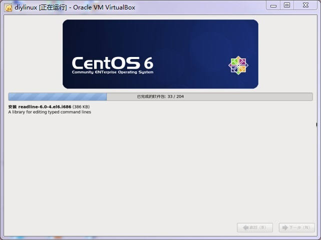
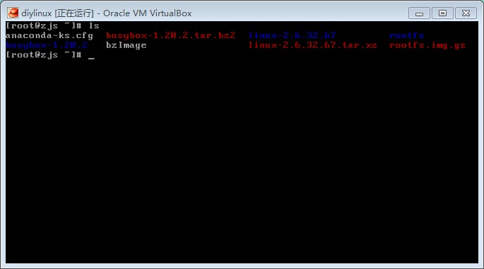

通常说起linux，脑子里就会想到ubuntu、debian、suse等等著名的发行版。然而，这些发行版的体积太过庞大，很多功能从来都用不着。对于有洁癖的人——比如我——总是想自己裁剪内核和外围的应用程序，制作自己的linux系统。
其实自己制作linux系统并不是一件很复杂的事情，只可惜网上的各种资料良莠不齐，我经过了各种试验，把各篇教程结合在一起看，终于成功了。
本着循序渐进的原则，本篇博客分为多个试验阶段。
============阶段一：安装宿主机CentOS==============
为了方便在做试验时上网查资料，我决定在虚拟机中做试验。首先得在虚拟机中安装一个功能较为齐全的linux，用它来编译linux内核、busybox，以及制作initrd和根文件系统等。
我选用VirtualBox虚拟机。在VirtualBox中创建一个名为diylinux的虚拟机，内存大小1024MB，一个固定大小的8GB硬盘，开启PAE/NX（设置->系统->处理器->扩展特性）。在虚拟机的存储->IDE控制器中加入一个光驱，放入CentOS-6.6-i386-minimal.iso，启动虚拟机。
启动后画面如下，选择第二个选项Install system with basic video driver

出现Disc Found对话框后，选择Skip。选择简体中文后Next，在键盘布局那里用默认的“美国英语式”后Next，在存储设备那里选择第一个“基本存储设备”然后Next，主机名保持默认后Next，时区默认上海后Next，根密码输入123456后Next。然后就是安装方式，选择最后一个“创建自定义布局”后Next。简单起见，我把8GB的硬盘分成一个ext3分区用了挂着/，和一个象征性的swap分区，然后Next，如图：

然后在安装引导程序的页面点击最后一个Next，CentOS6即开始安装，如图：

进入系统后，输入账号root，密码123456，即可登录系统，如图：

===============阶段二：编译linux内核===============
宿主机搭建好了，那么就要开始编译linux内核了。这个linux内核就是给我们自己搭建的linux使用的。
首先要下载内核源码。我使用最经典的linux 2.6版本。
由于CentOS默认没有开启网卡，所以需要手动开启一下：
ifup eth0
由于下载源码用到工具wget，所以先安装一下wget：
yum install wget
然后用wget下载linux 2.6的内核源码包：
cd ~ wget http://www.kernel.org/pub/linux/kernel/v2.6/longterm/v2.6.32/linux-2.6.32.67.tar.xz
下载完以后，在~下就有了linux-2.6.32.67.tar.xz。由于是xz格式，所以tar命令暂时无法解开，需要先安装xz命令：
yum install xz
然后解压：
tar xvf linux-2.6.32.67.tar.xz
这是就有了linux-2.6.32.67目录，进入之：
cd linux-2.6.32.67
由于配置编译选项时，会用到gcc和ncurses库，所以先安装gcc和ncurses：
yum install gcc yum install ncurses-devel
进入目录后即可开始配置编译选项：
make i386_defconfig make menuconfig
make menuconfig会出现一个窗口如图：

为了节约编译时间和降低调试的复杂度，把第二项Enable Loadable module support取消掉，把Networking support取消掉，然后Exit。
由于编译过程中需要用到perl，所以再安装perl：
yum install perl-devel
最后即可开始编译：
make bzImage
在漫长的等待之后，最终看见如下的画面：

注意其中的“Kernel: arch/x86/boot/bzImage is ready”，这个bzImage就是我们要的内核。
把这个内核复杂到~目录下备用：
cp arch/x86/boot/bzImage ~
可以看一个这个bzImage的属性：
cd ~ file bzImage
有如下字样“bzImage: Linux kernel x86 boot executable bzImage,version 2.6.32.67”，说明对了。
=================阶段三：编译busybox===================
光光有了linux内核而没有外围的应用程序是远远不够的，没有什么作用。最基本的应用程序就是各种linux命令，比如echo、ls、cat、ifconfig等等。在各种发行版中，每一个命令都是一个独立的应用程序。如果要自己一个个编译这些程序并布置好，那实在是太劳心了。好在有busybox这个神奇的工具。这个工具实现了一百多个常用命令的功能，而且使用上和独立的命令没有任何区别。
它的原理是这样的：首先由一个名叫busybox的可执行文件，然后在/bin和/sbin下面创建很多指向busybox的软链接，比如/bin/echo -> busybox，/bin/ls -> busybox等等。当在shell中输入echo “hello”时，事实上内核执行的是busybox。那么问题就来了：busybox是怎么知道要执行echo的功能而不是ls的功能呢？其实很简单。用C语言写过复杂一点的程序的人应该知道，main函数是带参数的，即int main(int argc,char* argv[])，而argv[0]即为shell中输入的命令。所以通过解析argv[0]即可得知是那个命令了。
首先要下载busybox的源码包：
cd ~ wget http://busybox.net/downloads/busybox-1.20.2.tar.bz2
然后在~目录下就有了busybox-1.20.2.tar.bz2，解压：
tar xvf busybox-1.20.2.tar.bz2
这时就有了busybox-1.20.2目录了，进入目录并开始配置编译选项：
cd busybox-1.20.2 make defconfig make menuconfig
在Busybox Settings —>Build Options下的第一个选项Build BusyBox as a static binary(no shared libs)选上。因为我们的linux环境暂时还没有加入各种运行时库，所以必须静态链接。
由于需要静态链接，所以我们的glibc必须有一个静态的版本，而当前系统是没有的，所以应该先安装一个：
yum install glibc-static
然后可以开始编译了：
make make install
在片刻的等待之后，编译完成，ls一下会发现多了一个_install目录，进去看一下都是一些什么：
cd _install ls

里面是bin、sbin和usr，是不是很像linux的根目录了？是的，我们就是要用它来构建linux的根目录。
至此busybox也编译完了。
===================阶段四：无盘linux的运行===============
离成功不远了。现在我们要开始制作一个在仅在内存中运行的linux，这个linux在运行时不访问硬盘。哈哈，是不是想到能够做一个liveCD或U盘系统呀？
首先，在~目录下建一个文件夹名为rootfs，它是我们用来构建根目录的地方。然后把busybox下的那个_install目录中的内容全部复制到rootfs中：
cd ~ mkdir rootfs cp -r busybox-1.20.2/_install/* rootfs cd rootfs
现在rootfs下已经有了bin、sbin、usr目录，好像还缺什么。现在来添加：
mkdir proc mnt var tmp dev sys etc
同时在rootfs下还必须要有一个init文件，这个init文件可以是一个可执行的二进制文件，也可以是一个shell脚本，或者是指向前面两者的链接。init文件会在linux内核初始化就绪后被执行。方便起见，我们就把init做成一个指向bin/sh的软连接：
ln -s bin/sh init
dev目录下还必须有几个必要的设备console,null,tty,tty1,tty2,tty3,tty4：
cd dev mknod console c 5 1 mknod null c 1 3 mknod tty c 5 0 mknod tty1 c 4 1 mknod tty2 c 4 2 mknod tty3 c 4 3 mknod tty4 c 4 4
这些tty就是和用户交互的终端。
好了，适用于一个内存linux的根文件系统就做好了，现在来制成一个压缩镜像吧：
cd ~/rootfs find . | cpio -H newc -o > ../rootfs.img cd ../ gzip rootfs.img -f
现在~目录下就有bzImage与rootfs.img.gz了：

把这两个文件复制到/boot目录下，然后打开vi编辑/boot/grub/grub.conf：
cp bzImage rootfs.img.gz /boot vi /boot/grub/grub.conf
在/boot/grub/grub.conf的末尾添加入：
title diylinux root (hd0,0) kernel /boot/bzImage rw root=/dev/ram initrd /boot/rootfs.img.gz
然后重启，在BIOS之后会看到启动画面：

此时要按任意键唤出选项：

要记得选择diylinux选项，然后将进入我们自制的linux的启动过程了。显示一大堆启动信息，然后画面定格：

可不要以为这个是死机了。请仔细看最后一句话“Please press enter to activate this console”，意思是说，让你按一下回车键，就可以激活控制台啦。按下回车后，出现了命令提示符”#”，此时可以输入各种命令啦。如图：